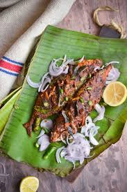

Kerala-Style-Fish-Fry

fish
KERALA STYLE FISH FRY
Spicy Aromatic and Flavorful Kerala Style Fish Fry!!!
Here is a simple & a spicy fish fry recipe from my mother’s cookbook,
something which has been in my
palate right from the days I could ever remember.
Ingredients
- Fishes
- tilapia
- pompano
- salmon
- king fish
- chili powder
- pepper powder
- Coconut oil
Steps :
- Clean fish and make slits on both sides.
- Prepare the masala by mixing the red chili powder, pepper powder, turmeric powder, salt, and lemon juice. The masala should have a thick consistency, and evenly coat the fish with it on both sides. Marinate for 30 minutes.
- Heat oil in frying pan, and add curry leaves. It helps to enhance the flavour while frying the fish. Place the fish carefully and shallow fry (use less oil) in medium flame. Allow it to fry until it becomes nicely charred and brown,
and then flip to cook the other side.
- Once cooked, place the fish on a paper towel to drain the oil.
- Squeeze a lemon on top of the fish, and serve with onion slices.
- Serve warm with Rice.